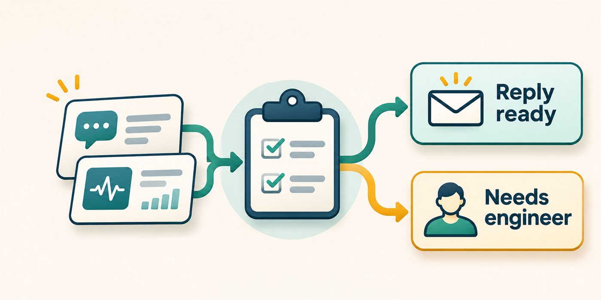

05 — AI PRODUCT CASE STUDY
Autonomous Case Resolution Agent
Designed an AI agent for eligible cloud support cases. It investigates known issue patterns, prepares a reply grounded in diagnostic evidence, and routes uncertain cases to a support engineer.

THE CONTEXT
It All Started When...
Engineers spent hours on cases where the relevant diagnostic evidence and product guidance already existed. Generic first replies could make customers repeat information. Automating the response raised a harder product question: how much evidence should the agent have before it tells a customer that a particular fix will work?
PRODUCT OWNERSHIP
Harpreet's Role
- Workflow design — Defined case eligibility and escalation rules with support operations. Suggested KPI: Share of eligible cases receiving an autonomous reply.
- Acceptance criteria — Specified the evidence required for a reply and the authorization required for billing handoffs. Suggested KPI: Share of sampled replies meeting evidence and authorization requirements.
- Release qualification — Set criteria for comparing new investigation methods with the baseline before rollout. Suggested KPI: Share of proposed investigation methods meeting release criteria.
- Kanban management — Tracked routing changes through safety review and release qualification. Suggested KPI: Median days blocked in safety review.
- Backlog prioritization — Prioritized gaps in reply evidence and escalation handling. Suggested KPI: Share of uncertain cases correctly escalated in review.
- Retrospective planning — Reviewed delayed replies to identify improvements for the next iteration. Suggested KPI: Median time to first meaningful reply.
WHAT CHANGED
Results
- Built a workflow that investigates eligible cases and returns a case-specific reply for the case-management system after evidence and safety checks.
- The workflow can route a case to an engineer when evidence is insufficient or a required check fails. Follow-up turns can trigger a fresh investigation.
- Established qualification and rollback criteria for changes to the agent. The delivery workflow was designed for controlled evaluation.
ILLUSTRATIVE OUTCOMES
Measurement example
The modeled delivery stage is hypothetical.
- 320 of 800eligible cases received autonomous replies in the modeled pilot (40%).
- 150 of 150sampled cases with uncertain findings were escalated to a human.
- 180 → 60 minmedian time to first meaningful reply across comparable cases (66.7% shorter).
EXPLORE THE FULL PROJECT
Want the complete case study?
Email me for the complete case study and program materials.
Email for the complete case study